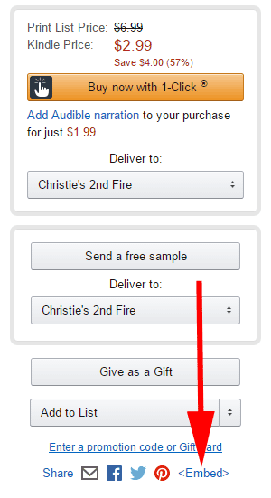
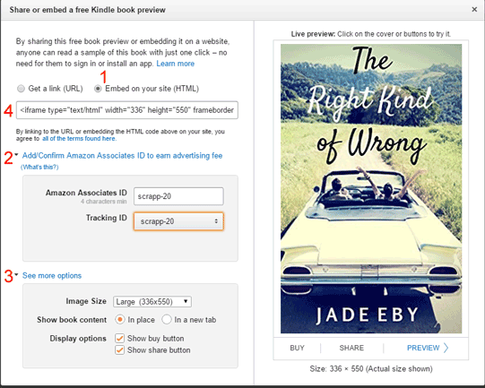

Amazon now allows you to show a preview of a book on your website as if you were reading on a Kindle. If your book is published on Amazon, you have the option to use this preview instead of a plain text excerpt.
If you'd like to use the Kindle Live Preview, go to your book's Amazon page. On the right-hand side under the buy buttons, click on the link that says <Embed>
A new window will pop up:
